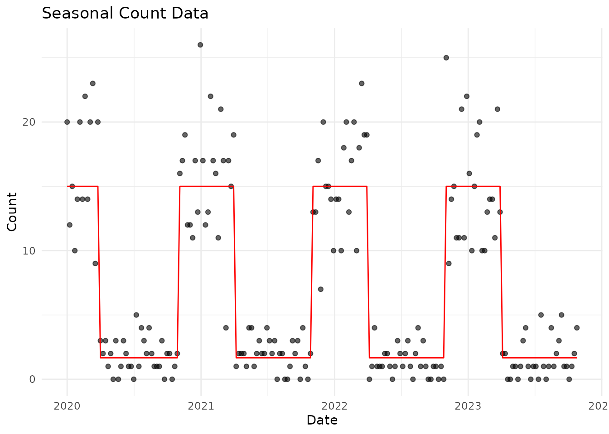
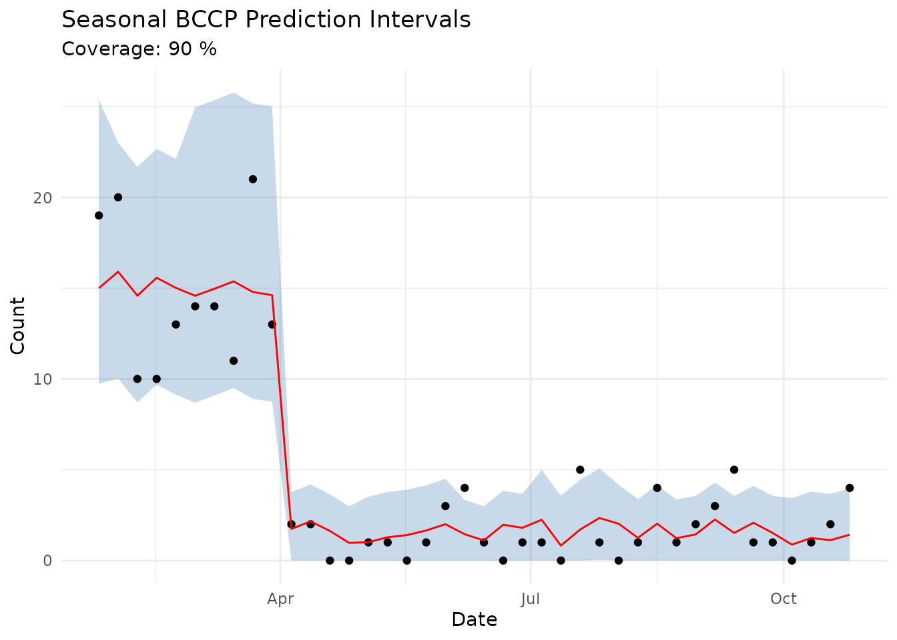

Introduction
The bccp package implements Bin-Conditional
Conformal Prediction (BCCP) for generating valid prediction
intervals with coverage guarantees within user-specified outcome bins.
This is particularly useful for count data and time series forecasting
where traditional conformal prediction methods may not provide adequate
coverage across different outcome ranges.
The method is based on Blair, Coppock & Moor (2024).
Basic Usage
Generate Example Data
First, let’s generate some synthetic count data to demonstrate the method:
# Generate synthetic Poisson data
set.seed(42)
n <- 500
x <- runif(n, 0, 10)
y <- rpois(n, lambda = exp(0.5 + 0.2 * x))
pred <- exp(0.5 + 0.2 * x) # True mean as prediction
df <- data.frame(x = x, y = y, pred = pred)
head(df)
#> x y pred
#> 1 9.148060 6 10.273955
#> 2 9.370754 13 10.741888
#> 3 2.861395 5 2.922031
#> 4 8.304476 9 8.678904
#> 5 6.417455 3 5.950594
#> 6 5.190959 8 4.656164Split Data
BCCP requires separate calibration and test sets. The calibration set is used to compute the prediction intervals, which are then applied to the test set.
# Use the built-in split function
splits <- split_data(df, calib_prop = 0.8, seed = 42)
calib_set <- splits$calib_set
test_set <- splits$test_set
cat("Calibration set size:", nrow(calib_set), "\n")
#> Calibration set size: 400
cat("Test set size:", nrow(test_set), "\n")
#> Test set size: 100Apply BCCP
Now apply bin-conditional conformal prediction with a target coverage of 90% (alpha = 0.1):
result <- bccp(
calib_set = calib_set,
test_set = test_set,
y_col = "y",
pred_col = "pred",
n_bins = 4,
zero_bin = TRUE,
alpha = 0.1
)
head(result)
#> id y pred lower upper
#> 1 1 0 2.710384 0.000000 6.653654
#> 2 2 5 4.308631 0.000000 8.253253
#> 3 3 3 5.512114 2.892893 13.222222
#> 4 4 3 2.310521 0.000000 6.262262
#> 5 5 8 9.553027 5.598599 17.000000
#> 6 6 9 7.149596 4.526527 14.872873Evaluate Coverage
Check the actual coverage achieved:
metrics <- coverage_metrics(result)
cat("Coverage:", round(metrics$coverage, 3), "(target: 0.90)\n")
#> Coverage: 0.92 (target: 0.90)
cat("Mean interval width:", round(metrics$mean_width, 2), "\n")
#> Mean interval width: 8.5
cat("Median interval width:", round(metrics$median_width, 2), "\n")
#> Median interval width: 8.23Visualize Results
# Add x values back for plotting
result$x <- test_set$x
ggplot(result, aes(x = x)) +
geom_ribbon(aes(ymin = lower, ymax = upper), fill = "steelblue", alpha = 0.3) +
geom_point(aes(y = y), color = "black", size = 1.5) +
geom_line(aes(y = pred), color = "red", linewidth = 1) +
labs(
title = "BCCP Prediction Intervals (90% Target Coverage)",
subtitle = paste("Actual coverage:", round(metrics$coverage * 100, 1), "%"),
x = "x",
y = "Count"
) +
theme_minimal()
Seasonal BCCP
For time series data with seasonality, use
bccp_seasonal() which conditions on both outcome bins AND
time periods:
# Generate seasonal data
seasonal_df <- generate_synthetic_data(
n = 200,
start_date = "2020-01-01",
seasonal_amplitude = 3,
base_rate = 5
)
head(seasonal_df)
#> date y pred month true_mean
#> 1 2020-01-01 20 14.81863 1 15
#> 2 2020-01-08 12 15.29501 1 15
#> 3 2020-01-15 15 15.71621 1 15
#> 4 2020-01-22 10 14.50365 1 15
#> 5 2020-01-29 14 15.22733 1 15
#> 6 2020-02-05 20 15.04245 2 15
ggplot(seasonal_df, aes(x = date)) +
geom_point(aes(y = y), alpha = 0.6) +
geom_line(aes(y = true_mean), color = "red") +
labs(title = "Seasonal Count Data", x = "Date", y = "Count") +
theme_minimal()
# Split temporally
seasonal_splits <- split_data(seasonal_df, calib_prop = 0.8, date_col = "date")
# Apply seasonal BCCP
seasonal_result <- bccp_seasonal(
calib_set = seasonal_splits$calib_set,
test_set = seasonal_splits$test_set,
date_col = "date",
alpha = 0.1,
min_stratum_size = 5
)
# Check coverage
seasonal_metrics <- coverage_metrics(seasonal_result)
cat("Seasonal BCCP coverage:", round(seasonal_metrics$coverage, 3), "\n")
#> Seasonal BCCP coverage: 0.9
cat("Mean interval width:", round(seasonal_metrics$mean_width, 2), "\n")
#> Mean interval width: 6.61
seasonal_result$date <- seasonal_splits$test_set$date
ggplot(seasonal_result, aes(x = date)) +
geom_ribbon(aes(ymin = lower, ymax = upper), fill = "steelblue", alpha = 0.3) +
geom_point(aes(y = y), size = 1.5) +
geom_line(aes(y = pred), color = "red") +
labs(
title = "Seasonal BCCP Prediction Intervals",
subtitle = paste("Coverage:", round(seasonal_metrics$coverage * 100, 1), "%"),
x = "Date",
y = "Count"
) +
theme_minimal()
Key Parameters
n_bins
Number of bins for partitioning the outcome space. More bins provide finer-grained coverage guarantees but require more calibration data.
References
Blair, G., Coppock, A., & Moor, M. (2024). Bin-Conditional Conformal Prediction. arXiv:2410.14507. https://arxiv.org/abs/2410.14507